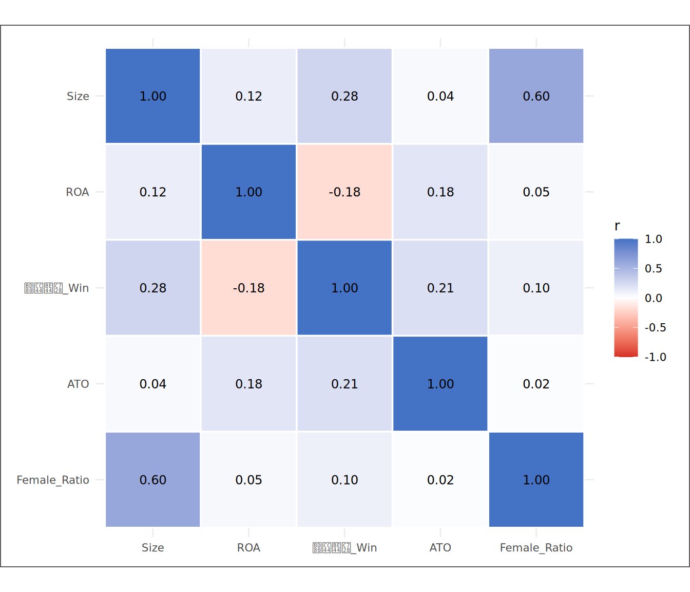
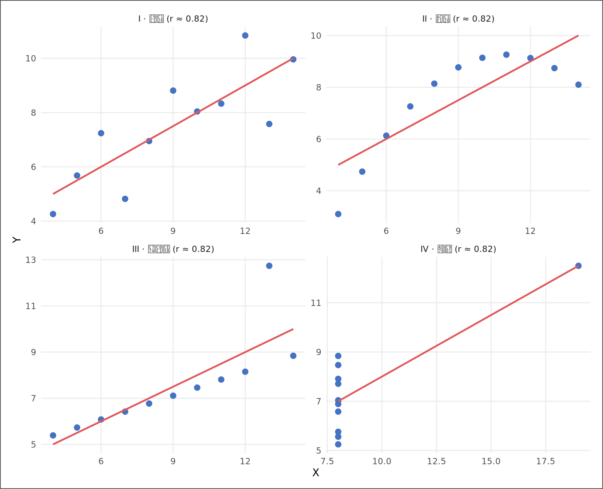
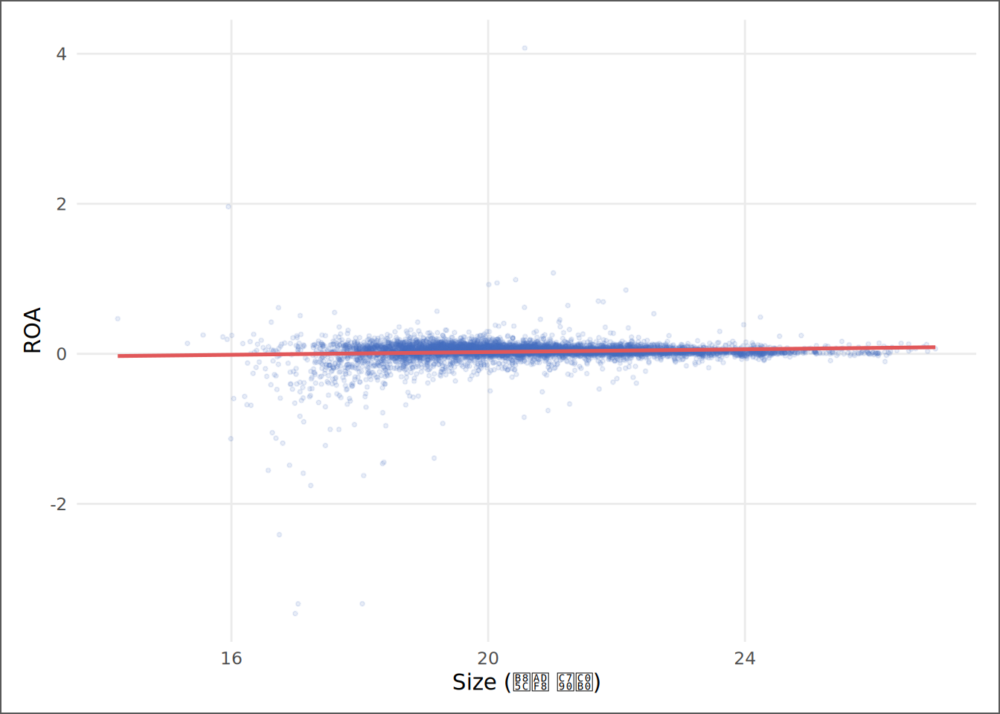

# | 키워드 | 한 줄 핵심 |
|---|---|---|
1 | 공분산 (Covariance) | 두 변수가 함께 움직이는 정도 — 단위에 종속되어 있어 비교가 어렵다 |
2 | 피어슨 상관계수 (Pearson r) | 공분산을 두 변수의 표준편차 곱으로 나눠 -1~+1로 표준화한 관계 지수 |
3 | 스피어만 순위 상관 (Spearman ρ) | 원래 값 대신 순위를 쓰는 상관 — 극단값에 강건하고 비선형 단조 관계도 잡는다 |
4 | 상관≠인과 (Correlation ≠ Causation) | 함께 움직임이 원인-결과를 의미하지 않는 세 가지 이유: 우연·역인과·제3변수 |
5 | 앤스컴의 사분면 (Anscombe's Quartet) | 같은 r값을 가진 네 가지 판이한 산점도 — 수치만 보면 속는다는 증거 |
6 | 상관행렬 (Correlation Matrix) | 모든 변수 쌍의 상관계수를 한 번에 보는 별자리 지도 |
7 | 다중공선성 예고 (Multicollinearity Preview) | 상관이 높은 변수 둘을 회귀에 동시 투입하면 계수가 불안정해진다 — 10장 본편 |
별자리 지도 — 상관과 다중공선성의 그림자
“상관은 질문의 시작이고, 인과는 답의 조건이다. 분석가의 임무는 둘을 혼동하지 않는 것이다.”
사례로 시작하기
8장이 끝난 날 오후, 김자산은 결과 요약을 가지고 팀장 자리로 갔다. ESG 평가를 받은 기업의 규모(Size)가 미평가 기업보다 통계적으로 유의하게 크다는 것이 수치로 확인됐다. t검정의 p값은 0.001 미만이었다.
팀장은 수치를 잠깐 보더니 물었다. “그 다음에 뭘 할 건가?”
“다음 주에 회귀분석입니다. ESG 평가 여부가 ROA와 갖는 조건부 관계를 보려면 Size, 부채비율, ATO, Female_Ratio를 통제변수로 넣어야 할 것 같습니다.”
“그 변수들이 서로 얼마나 닮았는지 알고 있어?”
자산은 멈췄다. Size와 ATO는 둘 다 기업의 규모나 효율성과 연결되어 있다. Size와 부채비율도 무관하지 않을 수 있다. 하지만 그 관계를 정확히 측정한 적은 없었다.
팀장이 노트북 화면에 이미지 하나를 띄웠다. 별자리 지도였다. 수십 개의 점이 선으로 연결되어 있었고, 가까운 점들이 오리온자리, 큰곰자리처럼 이름 붙은 군집을 이루고 있었다.
“별자리 지도야. 별들의 거리가 상관계수다 — 가까운 별들은 서로 닮았다는 뜻이고, 하나의 군집을 이룬다. 분석에서 변수도 마찬가지야. 서로 닮은 변수들은 같은 별자리다. 그 구조를 모른 채 회귀에 집어넣으면, 같은 별자리의 두 별이 서로의 공헌을 빼앗는다 — 계수가 출렁이고, 어느 쪽도 정확히 식별되지 않는다. 이것이 다음 주에 목격할 다중공선성이다.”
자산이 이해한 듯 고개를 끄덕이자 팀장이 덧붙였다. “그런데 반대쪽 함정도 있어. 지도를 보다가 가까운 별 두 개가 보이면 — 하나가 다른 하나를 끌고 있다고 착각하는 거야. 별자리 지도는 별들의 거리를 알려줄 뿐, 별이 왜 가까운지는 말해주지 않는다. 둘이 같은 방향을 가리킨다고 해서 하나가 다른 하나의 원인이라는 뜻은 아니야.”
“상관≠인과?”
“그 문장을 안다고 피해 가는 게 아니야. 아는 척하면서 인과처럼 쓰는 것이 진짜 함정이다.”
이 장의 임무는 두 가지다. 첫째, 핵심 재무변수들의 지도를 그린다 — 어떤 변수 쌍이 닮았는지, 닮음의 강도는 어느 정도인지를 숫자와 그림으로 측정한다. 둘째, 그 지도를 잘못 읽지 않는 법을 배운다 — 가까운 별이 인과 관계에 있다는 결론으로 성급하게 달려가는 것을 방지한다. 지도를 제대로 읽는 분석가만이 다음 주 회귀(10장)에서 변수를 올바르게 배치할 수 있다.
핵심 키워드
학습 목표
이 장을 마치면 다음 다섯 가지를 할 수 있다.
- 공분산과 상관계수의 수학적 관계를 설명하고, 표준화가 왜 해석을 가능하게 만드는지 말할 수 있다.
- 피어슨과 스피어만 상관의 차이를 이해하고, 재무 패널 데이터에서 두 지표를 함께 확인하는 이유를 설명할 수 있다.
- 상관이 인과가 아닌 이유를 세 가지 반례(우연·역인과·제3변수)로 설명하고, 각 반례를 재무 분석 맥락에 적용할 수 있다.
- 실데이터의 상관행렬을 계산하고 히트맵으로 시각화해, 최고 상관쌍의 의미와 회귀 투입 시 위험을 해석할 수 있다.
- 앤스컴의 사례로 산점도 없는 상관계수 읽기의 위험성을 설명하고, 이 장의 상관 지도가 10장 VIF로 이어지는 구조를 이해할 수 있다.
D→I→K→W 4단계 파이프라인
| 단계 | 이 장에서의 모습 |
|---|---|
| 데이터 (D) | 기업-연도 패널 — Size, ROA, 부채비율_Win, ATO, Female_Ratio (5개 핵심 연속변수) |
| 정보 (I) | 변수 쌍별 상관계수 — “Size와 ROA 사이의 r은 얼마다”, 히트맵으로 군집 확인 |
| 지식 (K) | 상관 구조 해석 — “이 쌍을 회귀에 동시 투입하면 VIF가 높아질 수 있다”, “이 관계는 제3변수의 가능성이 있다” |
| 지혜 (W) | 분석 설계 판단 — “어떤 변수 조합을 10장 회귀에 투입할지, 어떤 상관을 인과로 오독하지 않을지” |
데이터 출처와 수집
데이터 | 출처 | 이 장에서 쓰는 변수 | 이 장의 역할 |
|---|---|---|---|
재무제표 패널 | DataGuide 5.0 (KOSPI·KOSDAQ 상장기업) | 자산총계(로그 변환 → Size), 부채총계 | 연속 설명변수 Size의 원천 |
ESG 등급 | KCGS 등급 (DataGuide 제공) | is_esg_rated (0/1 더미) | 분석 범위 확인(이진 변수 함정 절) |
파생 변수 | 3~5장에서 구축한 SSOT 파이프라인 | ROA, 부채비율_Win, ATO, Female_Ratio | 상관행렬의 핵심 5개 변수 |
분석 표본은 3장에서 구축하고 4~5장에서 정제한 SSOT 데이터셋이다. 이 장의 상관 분석은 다음 장(10장)의 회귀 표본과 동일한 데이터 위에서 수행한다 — 지도와 재판이 같은 기업들을 놓고 벌어져야 한다.
공분산에서 상관으로 — 표준화의 의미
공분산의 한계
두 변수가 함께 움직이는 정도를 처음 측정하면 공분산(Covariance)이 나온다. 직관은 단순하다 — X가 평균보다 높을 때 Y도 평균보다 높으면(같은 방향), 곱 (X_i − X̄)(Y_i − Ȳ)은 양수가 된다. 이것을 n개 관측치에 걸쳐 평균내면 공분산이다.
Cov(X, Y) = (1/(n-1)) × Σ_i (X_i - X̄)(Y_i - Ȳ)공분산의 문제는 단위에 묶여 있다는 점이다. 자산(원)과 ROA(비율)의 공분산은 “원×비율”이라는 해석 불가능한 단위를 갖는다. 두 공분산을 비교하는 것도 의미가 없다 — 단위가 다르면 크기가 달라도 관계의 강도가 다른 건지 단위 규모가 다른 건지 알 수 없다.
표준화 — 상관계수의 탄생
공분산을 두 변수 각각의 표준편차 곱으로 나누면 단위가 사라진다.
r(X, Y) = Cov(X, Y) / [SD(X) × SD(Y)]이것이 피어슨 상관계수(Pearson r)다. 결과는 언제나 -1과 +1 사이에 놓인다. +1이면 두 변수가 완벽하게 함께 올라가고, -1이면 완벽하게 반대로 움직이며, 0이면 직선적 관계가 없다. 표준화의 선물은 단위 무관성(unit-free)이다 — Size(로그 자산)와 ROA(비율), ATO(회전율)와 Female_Ratio(비율)처럼 단위가 전혀 다른 변수들의 관계를 같은 자 위에 올려 비교할 수 있게 된다.
피어슨 vs 스피어만 — 두 개의 자
피어슨 r은 직선적 관계를 측정한다. 그 직선에서 극단적으로 벗어난 관측치 하나가 r의 값을 크게 바꿀 수 있다. 재무 데이터는 극단값이 많다 — 한 기업의 구조조정 연도, 회계 오류, 이례적 자산 매각이 전체 상관을 왜곡할 수 있다.
스피어만 순위 상관(Spearman ρ)은 이 문제를 다른 방식으로 접근한다. 원래 값 대신 순위를 써서 피어슨 r을 계산한다.
ρ(X, Y) = r(rank(X), rank(Y))순위로 바꾸면 극단값의 영향이 크게 줄어든다 — 재산 규모가 1조 원이든 100조 원이든, 순위 1번이라는 사실만 남는다. 또한 스피어만은 단조 관계(monotone relationship) — X가 커질 때 Y도 꾸준히 커지는 관계 — 라면 직선이 아니어도 잡아낼 수 있다.
실무 관행은 둘 다 계산하는 것이다. 두 지표가 비슷하면 분포 왜도가 관계 측정을 크게 왜곡하지 않는다는 뜻이고, 크게 다르면 극단값이나 비선형 구조를 의심할 근거가 된다.
상관이 인과가 아닌 이유 — 세 가지 반례
우연 상관 (Spurious Correlation)
전 세계에서 아이스크림 판매량과 익사 사망자 수는 양의 상관을 보인다. 아이스크림이 익사를 유발하는가? 아니다 — ’여름’이라는 제3변수가 두 변수를 동시에 끌어올린다. 이처럼 실질적인 연결 고리 없이 제3변수에 의해 만들어지는 상관을 우연 상관(spurious correlation)이라 한다.
재무 데이터에서도 허위 상관은 흔하다. 호황 연도에는 대부분의 상장기업 ROA와 주가가 함께 오른다 — 두 변수가 높은 상관을 보이지만, 그것은 거시경제 여건이라는 공통 원인의 그림자다.
역인과 (Reverse Causality)
“ESG 활동이 ROA를 높인다”는 주장이 있다고 하자. 그런데 인과의 방향이 반대일 수 있다 — ROA가 높아야 ESG 인증, 사회 공헌, 환경 투자에 쓸 여력이 생긴다. 즉 수익성이 먼저이고 ESG 활동이 결과일 수 있다. 상관계수는 두 방향을 구분하지 못한다 — r(ESG, ROA)과 r(ROA, ESG)는 수학적으로 같은 숫자다.
제3변수 (Confounding)
8장에서 확인했듯이 ESG 평가를 받은 기업은 규모(Size)가 현저히 크다. 그리고 대형 기업은 포트폴리오 분산, 자금조달 여력, 안정적 수익 기반으로 ROA가 안정적으로 나타나는 경향이 있다. 따라서 ESG 평가 여부와 ROA가 양의 상관을 보인다면, 그것은 ESG 평가 여부와 ROA의 조건부 차이인가 아니면 기업 규모라는 제3변수의 그림자인가? 이 질문이 10장 누락변수편의(OVB)의 정확한 출발점이다. 이 장에서 상관을 보고, 다음 장에서 제3변수를 통제한 뒤 관계가 살아남는지 재판에 부친다.
이 세 반례의 공통점은 하나다 — 상관계수는 두 변수가 함께 움직이는지만 잰다. 왜 함께 움직이는지는 묻지 않는다. ’왜’를 묻는 순간이 분석의 다음 단계이고, 그 답이 12장 인과추론에서 본격적으로 다루어진다.
별자리 지도 그리기 — 상관행렬
데이터 준비
# ① SSOT 데이터 적재
ssot_raw <- read_book_csv(ssot_path)
# ② 핵심 연속변수 선택 — 이 장의 분석 대상 5개
cor_df <- ssot_raw |>
dplyr::transmute(
코드, 코드명, 회계연도,
Size, ROA,
부채비율_Win,
ATO, Female_Ratio
) |>
tidyr::drop_na()
# ③ 표본 규모 확인
n_obs <- nrow(cor_df)
n_firms <- dplyr::n_distinct(cor_df$코드)
yr_min <- min(cor_df$회계연도)
yr_max <- max(cor_df$회계연도)코드 읽기. ①에서 read_book_csv()가 CSV를 읽어 데이터프레임으로 만들고 ssot_raw에 저장한다. ②의 transmute()는 원하는 변수만 뽑아 새 데이터프레임을 만드는 함수다 — select()와 달리 명시한 변수만 남긴다. tidyr::drop_na()는 다섯 분석 변수 중 어느 하나라도 결측인 관측치를 제거한다. ③은 분석 표본의 규모를 숫자로 요약한다 — 이 세 줄이 없으면 본문의 “기업 X개, 관측치 Y건”이라는 문장을 하드코딩해야 하고, 표본이 조금이라도 바뀌면 문장이 틀려진다. 항상 동적으로 계산한다.
분석 표본은 2010년부터 2024년까지 667개사의 기업-연도 관측치 10,000건이다.
피어슨 상관행렬 계산
cor_vars <- c("Size", "ROA", "부채비율_Win", "ATO", "Female_Ratio")
# ① 피어슨 상관행렬 — 직선 관계의 지도
cor_mat_p <- cor(
dplyr::select(cor_df, dplyr::all_of(cor_vars)),
use = "pairwise.complete.obs",
method = "pearson"
)
# ② 스피어만 상관행렬 — 순위 기반, 극단값 강건
cor_mat_s <- cor(
dplyr::select(cor_df, dplyr::all_of(cor_vars)),
use = "pairwise.complete.obs",
method = "spearman"
)
# ③ 최고 절댓값 상관쌍 자동 탐지 (대각선 제외)
cor_upper <- cor_mat_p
diag(cor_upper) <- NA
max_abs_r <- max(abs(cor_upper), na.rm = TRUE)
max_idx <- which(abs(cor_upper) == max_abs_r, arr.ind = TRUE)[1, ]
max_var1 <- rownames(cor_upper)[max_idx[1]]
max_var2 <- colnames(cor_upper)[max_idx[2]]
max_r <- cor_upper[max_idx[1], max_idx[2]]코드 읽기. ①의 cor() 함수는 행렬 형태의 데이터를 받으면 모든 변수 쌍의 상관계수를 한 번에 계산해 정방형 행렬로 돌려준다. use = "pairwise.complete.obs"는 각 쌍마다 두 변수 모두 결측이 아닌 관측치만 써서 계산하라는 옵션 — 완전한 행만 쓰는 "complete.obs"보다 표본을 덜 잃는다. ②는 똑같은 구조에서 method = "spearman"만 바꿔 순위 상관을 구한다. ③에서 diag(cor_upper) <- NA는 대각선(자기 자신과의 상관 = 1.000)을 NA로 교체한 뒤 — 자기상관 1.000이 “가장 높은 상관쌍”으로 잡히는 것을 막기 위해 — which()로 최댓값 위치를 찾는다. arr.ind = TRUE는 행렬의 위치를 [행번호, 열번호] 형태로 반환하라는 옵션이다.
변수 | Size | ROA | 부채비율_Win | ATO | Female_Ratio |
|---|---|---|---|---|---|
Size | 1.000 | 0.119 | 0.280 | 0.042 | 0.600 |
ROA | 0.119 | 1.000 | -0.182 | 0.175 | 0.049 |
부채비율_Win | 0.280 | -0.182 | 1.000 | 0.212 | 0.103 |
ATO | 0.042 | 0.175 | 0.212 | 1.000 | 0.021 |
Female_Ratio | 0.600 | 0.049 | 0.103 | 0.021 | 1.000 |
# ① 행렬을 long 형태로 변환
cor_long <- cor_mat_p |>
as.data.frame() |>
tibble::rownames_to_column("v1") |>
tidyr::pivot_longer(-v1, names_to = "v2", values_to = "r") |>
dplyr::mutate(
v1 = factor(v1, levels = rev(cor_vars)),
v2 = factor(v2, levels = cor_vars)
)
# ② 히트맵
ggplot2::ggplot(cor_long, ggplot2::aes(v2, v1, fill = r)) +
ggplot2::geom_tile(color = "white", linewidth = 0.6) +
ggplot2::geom_text(
ggplot2::aes(label = sprintf("%.2f", r)),
size = 3.2, color = "black"
) +
ggplot2::scale_fill_gradient2(
low = "#D73027", mid = "white", high = "#4472C4",
midpoint = 0, limits = c(-1, 1), name = "r"
) +
ggplot2::coord_fixed() +
ggplot2::labs(x = NULL, y = NULL) +
theme_book(10)
코드 읽기. ①에서 pivot_longer()가 정방형 행렬을 “v1, v2, r”의 세 열로 된 긴 형태로 풀어낸다 — ggplot2는 이 형태를 선호한다. factor(..., levels = rev(cor_vars))는 세로축(v1)을 역순으로 정렬해 대각선이 좌상단→우하단으로 놓이게 만든다. ②의 scale_fill_gradient2()는 음(-)이면 빨강, 0이면 흰색, 양(+)이면 파랑의 3색 그라디언트를 지정한다. coord_fixed()는 타일의 가로·세로 비율을 1:1로 고정해 찌그러짐을 방지한다. geom_text()는 타일 위에 숫자 레이블을 얹는다.
지도를 읽는 법은 이렇다. 진한 색일수록 상관이 강하고, 흰색에 가까울수록 관계가 없다. 대각선은 자기 자신과의 상관(r = 1.000)이라 무시한다. 분석가가 주목해야 할 타일은 진한 색이면서 인과적 연결이 의심스러운 쌍이다 — 그 쌍을 회귀에 동시 투입하면 10장에서 VIF 문제가 될 수 있다.
이 지도에서 절댓값 기준 가장 강한 상관쌍은 Female_Ratio과 Size (r = 0.600)로, 중간 수준의 양(+)의 상관이다. Size와 ROA는 r = 0.119로 양(+)의 매우 약한 상관을 보인다. Size와 부채비율_Win은 r = 0.280로 양(+)의 관계다.
피어슨과 스피어만의 차이가 가장 큰 쌍은 ROA과 부채비율_Win로, 피어슨 r = -0.182, 스피어만 ρ = -0.321, 차이 = 0.139이다. 이 차이는 그 변수 쌍에 극단값이나 비선형 관계가 섞여 있음을 시사한다.
산점도는 생략할 수 없다 — 앤스컴의 경고
같은 숫자, 다른 그림
1973년 통계학자 Francis Anscombe는 도발적인 논문을 발표했다. 그는 통계량(평균·분산·상관계수·회귀선)이 거의 완벽하게 같은 데이터 네 쌍을 만들었다 — 그러면서 산점도를 보면 전혀 다른 구조라는 사실을 보여주었다. 숫자만 믿는 분석가는 속는다는 증거였다.
사분면 | n | X 평균 | Y 평균 | X SD | Y SD | 피어슨 r | 형태 |
|---|---|---|---|---|---|---|---|
I (직선) | 11 | 9 | 7.5 | 3.32 | 2.03 | 0.816 | 직선 관계 (정상) |
II (곡선) | 11 | 9 | 7.5 | 3.32 | 2.03 | 0.816 | 포물선 (비선형) |
III (이상치) | 11 | 9 | 7.5 | 3.32 | 2.03 | 0.816 | 이상치 1개에 끌린 직선 |
IV (군집) | 11 | 9 | 7.5 | 3.32 | 2.03 | 0.817 | 수직 군집 + 이상치 |
네 데이터셋 모두 X 평균 ≈ 9.0, Y 평균 ≈ 7.5, X 표준편차 ≈ 3.32, Y 표준편차 ≈ 2.03, 피어슨 r ≈ 0.816다 — 이는 R에 기본 내장된 예제 데이터 anscombe의 알려진 값이다. 그러나 산점도(그림 9.2)를 보면 완전히 다른 세계가 드러난다.
# ① 네 데이터셋을 long 형태로 합치기
ans_df <- data.frame(
set = rep(c("I · 직선 (r ≈ 0.82)", "II · 곡선 (r ≈ 0.82)",
"III · 이상치 (r ≈ 0.82)", "IV · 군집 (r ≈ 0.82)"), each = 11),
x = c(anscombe$x1, anscombe$x2, anscombe$x3, anscombe$x4),
y = c(anscombe$y1, anscombe$y2, anscombe$y3, anscombe$y4)
)
ans_df$set <- factor(ans_df$set, levels = unique(ans_df$set))
# ② 2×2 산점도
ggplot2::ggplot(ans_df, ggplot2::aes(x, y)) +
ggplot2::geom_point(size = 2.2, color = "#4472C4") +
ggplot2::geom_smooth(formula = y ~ x, method = "lm", se = FALSE,
color = "#E15759", linewidth = 0.8) +
ggplot2::facet_wrap(~ set, ncol = 2, scales = "free") +
ggplot2::labs(x = "X", y = "Y") +
theme_book(10)
코드 읽기. ①에서 data.frame()으로 네 데이터셋을 수동으로 쌓아 긴 형태(long format)를 만든다 — rep(..., each = 11)이 set 레이블을 각 데이터셋의 11개 관측치에 반복해 붙인다. ②에서 facet_wrap(~ set, ncol = 2)이 set 변수를 기준으로 캔버스를 2열 격자로 분할한다 — 이 한 줄이 네 개의 ggplot() 호출을 대체한다. scales = "free"는 각 패널이 자기 데이터에 맞는 축 범위를 가지게 한다. geom_smooth(method = "lm")은 각 패널에 OLS 직선을 추가한다.
그림 9.2가 말하는 교훈은 단호하다. 상관계수 r ≈ 0.82는 이 네 가지 구조를 전혀 구분하지 못한다. 직선(I)인지 포물선(II)인지, 이상치 하나가 관계를 만드는 것(III)인지, 사실은 변수가 거의 변하지 않아 점이 수직으로 몰려 있는 것(IV)인지 — 숫자만 보면 알 수 없다. 산점도 없는 상관 분석은 눈을 감고 그림의 크기를 맞추는 것과 같다.
Size–ROA 산점도 — “관계가 보인다”와 “인과다” 사이의 거리
ggplot2::ggplot(cor_df, ggplot2::aes(x = Size, y = ROA)) +
ggplot2::geom_point(alpha = 0.12, size = 0.7, color = "#4472C4") + # ①
ggplot2::geom_smooth( # ②
formula = y ~ x, method = "lm", se = TRUE,
color = "#E15759", fill = "#E15759", alpha = 0.15, linewidth = 0.9
) +
ggplot2::labs(x = "Size (로그 자산)", y = "ROA") +
theme_book(11)
코드 읽기. ①의 alpha = 0.12는 점들의 투명도를 12%로 낮춘다 — 수만 건의 관측치가 겹쳐 찍히면 중심이 검게 뭉쳐 분포를 알 수 없게 되는데, 투명도를 낮추면 점이 많이 겹친 곳이 진하게 보여 밀도 구조가 드러난다. size = 0.7은 점 크기를 줄여 과도한 잉크를 방지한다. ②의 se = TRUE는 회귀선 주변에 95% 신뢰 띠를 그린다 — 이 띠가 좁을수록 추세선의 위치 추정이 정밀하다는 뜻이다.
Size와 ROA의 피어슨 상관은 r = 0.119으로 매우 약한 양(+)의 상관이다. 규모가 클수록 ROA가 함께 올라간다. 그런데 이 추세선을 보고 “규모가 수익성을 만든다”고 결론 내리면 앤스컴의 함정과 같은 실수를 저지른다. 적어도 세 가지 다른 이야기가 이 그림과 양립한다 — ① 대형 기업의 다각화된 사업 포트폴리오가 수익 안정성을 높인다(규모→수익성), ② 수익성이 높아야 자산을 축적할 수 있다(수익성→규모), ③ 경쟁이 약한 산업 내 대기업들이 두 변수 모두를 끌어올린다(제3변수). 상관계수는 셋 중 어느 이야기도 선택하지 않는다.
이것이 10장의 재판을 여는 질문이다. “규모와 기타 조건을 고정한 뒤에도 이 관계가 살아남는가?” — 그 답이 회귀가 줄 수 있는 가장 강한 관찰 근거다.
분석가의 번역
숫자 | 통계적 해석 | 실무 번역 |
|---|---|---|
r(Female_Ratio, Size) = 0.600 | 절댓값 기준 최고 상관쌍 — 양(+) 방향 | Female_Ratio과 Size의 상관이 중간 수준 이하이므로, 다중공선성 위험은 제한적이다 |
r(Size, ROA) = 0.119 | 매우 약한 양(+)의 상관 | 규모와 수익성은 이 데이터에서 약하게 연결되어 있어, 별개의 리스크 차원으로 취급할 수 있다 |
r(Size, 부채비율_Win) = 0.280 | 약한 양(+)의 상관 | 두 변수를 함께 통제해도 공선성 위험이 낮다 |
r(ROA, ATO) = 0.175 | 매우 약한 양(+)의 상관 | ROA와 ATO는 서로 다른 차원의 성과를 측정하므로, 각각 독립적으로 분석 가능하다 |
Pearson–Spearman 최대 차이 = 0.139 (ROA–부채비율_Win) | 피어슨 vs 스피어만 차이 유의 — 분포 왜도 의심 | 피어슨과 스피어만이 가장 다른 쌍(ROA–부채비율_Win)에는 극단값 또는 비선형 패턴이 있을 가능성이 있다 — 산점도로 직접 확인하라 |
완성 예시 — 상관 구조 점검 메모
KG Asset 내부 분석 메모 — 10장 회귀 준비: 상관 구조 점검
목적. 회귀 투입 전 핵심 연속변수 5개(Size·ROA·부채비율_Win·ATO·Female_Ratio)의 피어슨·스피어만 상관 구조를 점검해, 다중공선성 위험 쌍을 사전에 식별한다.
핵심 발견. 가장 강한 상관쌍은 Female_Ratio–Size (Pearson r = 0.600, 양(+), 중간 수준의 상관)이다. 모든 쌍에서 |r| < 0.6으로 다중공선성 위험은 제한적이나, VIF 확인은 필수다. Pearson과 Spearman 지표가 가장 다른 쌍은 ROA–부채비율_Win (차이 = 0.139)로, 산점도 확인과 Spearman 결과를 병기해야 한다.
10장 권고. (1) |r| ≥ 0.6인 쌍을 회귀에 동시 투입할 경우 VIF를 반드시 보고하라. (2) Size–ROA 산점도에서 관계가 비선형이거나 이상치 주도라면 Winsorize 후 재확인하라. (3) 상관 지도는 통제할 변수의 목록을 결정하는 기준이지, 인과 방향을 결정하는 기준이 아님을 명심하라.
이진 변수의 함정 — 지도의 한 가지 맹점
앞서 그린 별자리 지도에는 is_esg_rated(ESG 평가 여부, 0/1 더미)가 없었다. 의도적 선택이다. 0/1 더미를 피어슨 상관 히트맵에 그대로 포함시키면 지도가 왜곡된다 — 이 절이 그 이유를 설명한다.
# ① ESG 평가 비율 (기저율, base rate)
esg_rate <- mean(ssot_raw$is_esg_rated, na.rm = TRUE)
# ② 피어슨 상관의 이론적 상한 계산 — 이진 변수가 연속 변수와 가질 수 있는 최대 |r|
# 이진 변수의 피어슨 r 상한 = sqrt(p × (1-p)) / SD_y 에서,
# 두 변수 모두 표준화된 경우 = sqrt(p × (1 - p))
max_r_possible <- sqrt(esg_rate * (1 - esg_rate))
# ③ 실제 is_esg_rated–Size 피어슨 상관
r_esg_sz <- cor(ssot_raw$is_esg_rated, ssot_raw$Size,
use = "pairwise.complete.obs")코드 읽기. ①은 단순한 평균이다 — 0/1 더미의 평균이 기저율(base rate)이다. ②의 공식이 핵심이다. 이진 변수(p의 비율이 1, 나머지 1-p가 0)와 정규 분포 연속 변수의 피어슨 상관은 sqrt(p × (1-p))를 넘을 수 없다 — 이것이 점-이열 상관(point-biserial)의 수학적 상한이다. ③은 실제 상관을 계산해 상한과 비교할 수 있게 한다.
이 데이터에서 ESG 평가 비율은 40.470%다. 따라서 is_esg_rated와 어떤 연속 변수의 피어슨 상관도 이론상 최대 0.491를 넘을 수 없다. is_esg_rated–Size의 실제 피어슨 r은 0.600로, 상한의 80% 이상을 쓴 셈이다 — 이 두 변수가 강하게 묶여 있음을 의미한다.
문제는 이것이다. 히트맵에서 is_esg_rated–Size의 색이 다른 쌍보다 연할 때, “관계가 약하다”고 읽어서는 안 된다 — 기저율이 50%에서 벗어날수록 상한 자체가 낮아지기 때문에, 겉으로 보이는 r값이 작아도 이진 변수 기준으로는 강한 관계일 수 있다. 8장의 t검정이 이 관계를 통계적으로 확인한 이유가 여기 있다 — 8장은 이진 변수와 연속 변수의 집단 차이를 비교하는 올바른 도구다.
실무 원칙: 이진 변수는 피어슨 상관행렬에서 꺼내 t검정(8장)이나 점-이열 상관(point-biserial) 을 쓰거나, 아예 회귀의 더미변수로 직접 투입해 10장의 계수 해석으로 넘긴다.
제3변수를 고정하면 달라진다 — 부분상관의 예방접종
상관행렬이 보여주는 숫자는 두 변수의 미가공 관계 — 제3변수의 그림자가 그대로 섞인 관계다. is_esg_rated와 ROA의 단순 상관에는 “Size가 클수록 ROA가 안정적”이라는 기업 규모의 영향이 섞여 있을 수 있다. Size가 ESG 평가 여부와도, ROA와도 동시에 연결되어 있다면, 두 변수가 “함께 움직이는 것처럼 보이는” 일부는 사실 규모라는 제3변수의 그림자다.
부분상관(partial correlation)은 이 그림자를 걷어낸 뒤 남는 관계를 잰다. 방법은 직관적이다.
- is_esg_rated를 Size에 회귀해 잔차를 구한다 → Size로 설명되지 않는 ESG 평가 여부의 순수 변동
- ROA를 Size에 회귀해 잔차를 구한다 → Size로 설명되지 않는 ROA의 순수 변동
- 두 잔차의 피어슨 상관을 계산한다 → Size를 고정한 뒤 두 변수의 관계
이 세 단계를 잔차법(residual method)이라 한다. 10장 회귀가 “다른 변수를 고정한 계수”를 추정하는 것과 본질적으로 같은 연산이다.
# 부분상관 — Size를 고정한 뒤 is_esg_rated와 ROA의 조건부 관계
partial_df <- ssot_raw |>
dplyr::select(is_esg_rated, ROA, Size) |>
tidyr::drop_na()
# ① 단순 피어슨 상관 (Size 통제 전)
r_raw <- cor(partial_df$is_esg_rated, partial_df$ROA)
# ② Size를 설명하고 남는 잔차
e_esg <- lm(is_esg_rated ~ Size, data = partial_df)$residuals
e_roa <- lm(ROA ~ Size, data = partial_df)$residuals
# ③ 잔차들의 상관 = 부분상관
r_partial <- cor(e_esg, e_roa)is_esg_rated–ROA의 단순 상관은 r = 0.049이다. Size를 걷어낸 뒤의 부분상관은 r = -0.028이다. 상관이 약해졌다 — 단순 상관의 일부는 기업 규모의 그림자였음을 시사한다.
이 두 숫자의 차이가 10장 회귀의 핵심 개념을 미리 보여준다. 단순회귀에서 ESG 평가 여부의 계수는 r_raw 방향의 정보를 담고, Size를 통제변수로 넣으면 계수가 r_partial 방향으로 이동한다. “다른 조건을 고정한다”는 표현이 코드로는 lm(ROA ~ is_esg_rated + Size) 한 줄이지만, 개념으로는 지금 직접 본 잔차 연산이다. 지금은 “제3변수를 고정하면 숫자가 달라질 수 있다”는 감각만 몸에 익히면 충분하다 — 10장에서는 이 잔차법 아이디어를 5개 통제변수 전체로 확장해 계수를 추정한다.
R로 직접 해보기
| IPO | 내용 |
|---|---|
| Input | In_class_R/11주차/Derived_SSOT_Dataset.csv (3~5장 SSOT 파이프라인 산출) |
| Process | SSOT 적재 → 핵심 연속변수 선택 → 피어슨·스피어만 상관행렬 → 히트맵 → 이진 변수 상한 점검 → Size–ROA 산점도 → 앤스컴 직관 확인 → 상관 구조 점검 메모 |
| Output | Output/ch09_corr_matrix_pearson.csv, Output/ch09_corr_matrix_spearman.csv, 상관 히트맵·산점도(본문 렌더) |
| Report | 상관 구조 점검 메모 1쪽 (표 9.5 번역 양식 + 위 완성 예시 형식) |
난이도 | 분석 아이디어 | 확인 포인트 |
|---|---|---|
초심자 | ATO와 Female_Ratio의 산점도를 직접 그리고, 관계의 형태(직선·곡선·군집)를 서술한다 | 직선인가 곡선인가 — 피어슨 r이 신뢰할 수 있는 형태인가 |
초심자 | 상장상태(정상 vs 상장폐지) 별로 상관행렬을 따로 계산해, 두 집단의 상관 구조가 다른지 비교한다 | 두 집단의 r 차이가 실질적으로 의미 있는 크기인가 (0.1 이상 차이?) |
초심자 | 스피어만 상관이 피어슨 상관과 가장 크게 다른 쌍을 찾고, 그 쌍의 산점도를 그려 이유를 추론한다 | 극단값 제거 전후 r 변화로 어느 변수가 극단값에 취약한지 |
고급자 | 연도별 Size–ROA 피어슨 상관을 계산해 시간에 따라 관계의 강도가 안정적인지 확인한다 | 특정 시기에 r이 급변했다면, 그 시기의 경제·시장 맥락은 무엇인가 |
고급자 | 상관행렬에서 |r| ≥ 0.5 인 쌍을 추출하고, 각 쌍에 대해 OLS 단순회귀를 돌려 R²와 r² 의 관계를 수식으로 확인한다 | 단순회귀 R² = r² 가 성립하는지, 그 이유를 수식으로 확인 |
AI 협업 프로토콜 — 지도를 그리게 하되, 인과 해석은 직접 하라
이 장의 임무(상관 구조 점검)에서 AI가 가장 위험한 지점은 코드가 아니라 해석이다. AI는 r = 0.6을 보고 “X가 Y에 강한 영향을 미친다”고 쓰는 문장을 자연스럽게 생성한다. 분석가의 역할은 AI가 만든 지도를 손에 쥐고, 인과의 방향성은 스스로 판단하는 것이다.
수준 | 이 장의 행동 |
|---|---|
L1 (인식) | AI에게 '5개 변수의 상관행렬을 그려줘'라고 요청하고 결과를 그대로 보고서에 붙인다 |
L2 (적용) | AI에게 데이터 구조와 변수 정의를 알려주고, 피어슨·스피어만 비교와 히트맵 코드를 생성하게 한다 |
L3 (분석) | AI에게 '이 상관행렬에서 10장 회귀에서 VIF 위험이 있는 쌍을 식별하고 이유를 설명하라'고 요구한 뒤, 데이터로 직접 검증한다 |
L4 (창의) | AI와 함께 상관이 높은 쌍을 목록화하고, 각 쌍에 대해 '제3변수 후보'를 브레인스토밍한 뒤 데이터에서 확인 가능한 것과 불가능한 것을 분류한다 |
AI 협업 워크플로는 두 개의 프롬프트로 충분하다.
[프롬프트 1 — 분석 전: 상관 지도 생성] “다음 다섯 변수(Size, ROA, 부채비율_Win, ATO, Female_Ratio)의 피어슨·스피어만 상관행렬을 계산하고 히트맵을 그리는 R 코드를 작성해줘. 데이터는 read_book_csv()로 읽고 ft_book()으로 표를 출력한다. 이진 변수(is_esg_rated)는 행렬에 포함하지 않는다.”
[프롬프트 2 — 분석 후: 인과 오독 검증] “다음 상관행렬을 보고 (1) VIF 위험이 있는 쌍 (2) 역인과 가능성이 있는 쌍 (3) 제3변수가 의심되는 쌍을 각각 제시해줘. 단, 상관계수를 인과 언어(‘영향’, ‘원인’)로 서술하지 말고, ‘함께 움직인다’·’조건부 관계’로만 표현해줘.” AI가 제안한 쌍 중 데이터로 확인 가능한 것은 직접 회귀(10장)로 검증하고, 이 메모의 한계 절에 불가능한 것을 기록하라.
AI에게 맡겨도 되는 일 | 사람이 반드시 판단해야 하는 일 |
|---|---|
상관행렬·히트맵 코드 생성 | 분석에 포함할 변수 목록과 이진 변수 처리 방식 |
피어슨·스피어만 차이 큰 쌍 목록화 | 두 지표의 차이를 분포 왜도 vs 비선형 중 어느 쪽으로 해석할지 |
제3변수 후보 브레인스토밍 | 후보 변수가 SSOT 데이터에 있는지, 있다면 어떤 측정 한계가 있는지 |
앤스컴 사분면 예시 코드 생성 | 우리 데이터에 해당하는 패턴이 무엇인지 (형태 I~IV 중 어느 쪽인가) |
점검 메모 초안 작성 | 인과 방향 가설과 투자 판단 |
정리, 함정, 다음 장
지도 그리기는 끝났다. 이 장의 결론을 한 문장으로 줄이면 이렇다. 상관행렬은 분석의 도구이지 결론이 아니다 — 지도를 그리는 일과 지도를 지형으로 오독하는 일 사이에 분석가가 서 있어야 한다.
많은 분석가들이 빠지는 함정 세 가지를 기억하라.
상관계수만 보고 산점도를 생략한다. r = 0.65와 r = 0.64의 두 쌍이 있을 때, 하나는 깔끔한 직선이고 다른 하나는 이상치 한 개가 만들어낸 착시일 수 있다. 앤스컴이 1973년에 이미 경고했다 — 숫자 하나로 구조를 판단하지 마라. 상관계수를 보고한 모든 분석에서 주요 쌍의 산점도를 함께 첨부하는 것이 최소한의 성실이다.
이진 변수를 피어슨 상관행렬에 무비판적으로 포함시킨다. 0/1 더미는 기저율(p)에 의해 이론적 최대 |r|이 결정된다. 기저율이 30%라면 최대 r ≈ 0.46 — 이 숫자를 연속 변수 간의 r과 같은 눈금으로 읽으면 관계의 강도를 과소평가하게 된다. 이진 변수와의 비교는 t검정(8장)이나 회귀 더미(10장)가 올바른 도구다.
상관이 높은 변수를 회귀에 동시 투입해도 된다고 방심한다. “상관은 알지만 VIF는 10장에서 보면 되지 않나”는 생각이 문제다. 지도를 보는 이유는 그 지도가 예고하는 위험을 미리 준비하기 위해서다. 이 데이터에서 모든 쌍의 |r|이 0.6 미만으로 다중공선성 위험이 낮지만, VIF 확인은 여전히 필수다.
점검 항목 | 통과 기준 |
|---|---|
5개 핵심 연속변수의 피어슨·스피어만 상관행렬을 모두 계산했는가 | 두 행렬 모두 Output CSV로 저장 |
히트맵으로 군집 구조를 시각화하고 최고 상관쌍을 명시했는가 | 그림 9.1 형식 보고 |
최고 상관쌍 이상의 모든 |r| ≥ 0.6 쌍을 VIF 위험 후보로 기록했는가 | 메모의 VIF 권고 절 1문단 이상 |
Size–ROA 쌍에 대해 산점도를 그리고 비선형 여부를 확인했는가 | 그림 9.3 형식 보고 및 형태 서술 |
is_esg_rated를 피어슨 행렬에서 제외하고 그 이유를 명시했는가 | 이진 변수 절 또는 메모 한계 절에 명시 |
상관 해석에서 인과 표현('영향', '원인', '효과')을 쓰지 않았는가 | 번역 표(표 9.5)의 실무 번역 열이 '~와 함께 움직인다' 표현으로 작성 |
분야 | 같은 구조의 질문 |
|---|---|
마케팅 분석 | 광고비와 매출의 상관이 높다 — 광고가 매출을 만드는가, 호황 분기에 둘 다 올라가는가 |
인사 분석 | 교육 이수율과 성과 점수의 상관 — 의욕 높은 사람이 교육도 받고 성과도 내는 것 아닌가 |
공공 정책 | 복지 지출과 빈곤율의 음(-) 상관 — 복지가 빈곤을 줄이는가, 원래 부유한 지역이 복지도 많이 쓰는가 |
의료 통계 | 운동량과 콜레스테롤의 음(-) 상관 — 건강한 사람이 운동을 더 많이 할 여유가 있는 것 아닌가 |
신용 리스크 | 담보 비율과 연체율의 음(-) 상관 — 담보를 제공할 능력 있는 차주가 애초에 신용도 좋은 것 아닌가 |
이 장의 산출물(피어슨·스피어만 상관행렬 CSV)은 13장 최종 보고서의 “데이터 탐색” 절에 들어가는 부품이다. 그리고 이 지도에서 발견한 군집 — 특히 Size와 다른 변수들의 상관 구조 — 은 다음 장(10장)에서 통제변수를 선택하고 VIF를 진단하는 근거가 된다. 상관이 높은 두 별을 모두 회귀에 세우면 어떤 일이 생기는지를, 10장의 재판에서 목격하게 된다. 또한 “상관이 있다”는 관찰 뒤에 남는 “왜 그런가”의 질문은 12장 인과추론의 씨앗이다 — 이 장에서 지도를 그리고, 12장에서 그 지도 위에서 인과의 경로를 추적한다.
주차 PBL — 상관을 인과로 오독한 보고서를 해체하라
이 장의 기술을 현실 비판에 적용하는 것이 이번 주의 PBL이다. 본문에서는 Size·ROA·부채비율_Win·ATO·Female_Ratio의 지도를 그렸다 — PBL에서는 ATO(자산회전율)와 ROA의 관계가 재판에 오른다.
Context. CIO가 리서치 팀에 한 줄짜리 지시를 내렸다. “ATO와 ROA의 상관이 0.175이니, 포트폴리오 편입 기준에 ATO > 0.8인 종목을 ROA 프록시로 써도 되겠다.” 팀장은 이 지시에 세 가지 문제가 있다고 판단한다. 첫째, 상관계수만으로 한 변수가 다른 변수를 대체할 수 있다는 결론은 성립하지 않는다. 둘째, 산점도를 보지 않은 상관은 앤스컴의 위험에 노출되어 있다. 셋째, 둘이 함께 움직인다면 그 이유가 공통 원인(Size? 업종?)일 수 있다. 임무: 상관 분석을 직접 수행하고, CIO의 가정이 어디서 성립하고 어디서 무너지는지를 1쪽 메모로 보고하라.
| 단계 | 미션 | 핵심 |
|---|---|---|
| Level 1 (필수) | ATO–ROA 피어슨·스피어만 상관 계산 | 두 지표가 비슷한가 다른가, 다르다면 이유는 |
| Level 2 (심화) | 산점도 3종 그리기 | ATO–ROA, Size–ROA, Size–ATO 산점도 + 추세선 — 직선인가 곡선인가 이상치가 지배하는가 |
| Level 3 (확장) | “상관을 인과로 오독한 가상 보고서” 비판 메모 | CIO 지시의 논리적 오류 3가지를 세 가지 반례(우연·역인과·제3변수) 틀로 서술 |
| Level 4 (도전) | Size를 제3변수로 놓고 편의 방향 추론 | Size와 ATO의 상관, Size와 ROA의 상관을 바탕으로 보조회귀식을 써서 ATO 계수의 편의 방향을 예측 (10장 OVB 미리 체험) |
| Level 5 (완성) | 완성 상관 분석 메모 | 위 완성 예시 형식으로 CIO에게 보내는 1쪽 메모 — ATO를 ROA 프록시로 쓸 수 있는 조건과 없는 조건을 명시 |
제출물은 과목 표준 4종 — Input(데이터), Script(프롬프트 로그 포함 코드), Output(상관행렬 CSV·산점도), Report(분석 메모). 본문의 Script/ch09_correlation.R이 출발 코드다.
수행 가이드라인 (모범답안이 아니라 사고의 이정표다).
- Level 1에서 피어슨과 스피어만이 크게 다르다면, 멈추고 산점도를 먼저 그린다. 숫자가 두 개이면 어느 쪽을 믿을지 결정해야 하는데, 산점도가 그 판단의 근거다.
- Level 2의 산점도 3종을 순서대로 읽어라. ATO–ROA가 앤스컴 II형(포물선)이라면 피어슨 r은 관계를 과소평가한다. Size–ATO가 강하게 양(+)이라면 “ATO가 높은 기업은 원래 작다”는 구조인지 “ATO가 높은 기업은 원래 크다”는 구조인지가 갈린다 — 이것이 Level 4의 편의 방향을 결정한다.
- Level 3 비판 메모의 핵심은 CIO의 논리를 공격하는 것이 아니라 그 논리가 성립하기 위한 조건을 명시하는 것이다. “ATO를 ROA 프록시로 쓰려면 두 변수가 완벽한 직선 관계여야 하고, 제3변수가 개입해 있지 않아야 하며, 둘의 스케일과 분포가 같아야 한다 — 이 세 조건이 동시에 성립하는지 확인하지 않았다”는 문장이 비판의 정확한 형태다.
- Level 4는 10장의 예고편이다. 수식을 쓰지 않아도 된다 — “Size가 ATO와 r = X 방향으로 묶여 있고, Size가 ROA와 r = Y 방향으로 묶여 있으므로, ATO의 단순 상관에는 Size의 그림자가 Z 방향으로 실려 있다”는 문장으로 방향을 예측하면 Level 4를 통과한다.
- Level 5의 메모는 CIO가 한 번 더 물어볼 반론을 예상하고 방어 논리를 미리 설계하라. “같은 업종 안에서 ATO–ROA 상관이 더 강한가?” — 이 질문에 답하려면 산업 구조가 필요하고, 지금 SSOT에는 없다. 없다는 사실을 한계로 정직하게 적는 것이 방어다.
- 결론 문장은 반드시 두 형태 중 하나로 써라(데이터가 결정한다) — “ATO–ROA 상관은 직선이고 제3변수 Size 통제 후에도 약화되지 않으므로, 제한적 맥락에서 ATO는 ROA의 부분 대리 지표로 쓸 수 있다” 또는 “ATO–ROA 상관은 Size라는 공통 원인의 그림자이므로, ATO만으로 ROA를 예측하는 것은 대기업 편향을 내포한 결론이다.”
- 메모 작성 원칙: 상관계수·r값을 CIO 앞에서 직접 거론하는 대신, “같은 자산 규모의 기업끼리 비교하면 ATO가 높은 쪽이 ROA도 높은가?” 라는 문장으로 번역하라. 통계량을 숨기되, 그 통계량이 함의하는 투자 질문을 앞에 세워라.
채점 루브릭 (100점).
평가 항목 | 배점 | 통과 기준 |
|---|---|---|
재현성 | 20 | 데이터 경로·스크립트·패키지·표본 수가 명시되어 그대로 재실행 가능 |
상관 분석 | 30 | 피어슨·스피어만 상관, 산점도 3종이 있고 결과를 상관≠인과 틀로 해석 |
비판 메모 | 25 | CIO 지시의 논리적 오류를 세 가지 반례로 구체적으로 지적하고, 성립 조건을 명시 |
의사결정 번역 | 25 | CIO에게 전달할 수 있는 비즈니스 언어로 결론 작성 — 통계 용어 최소화, 투자 판단 문장으로 |
이 장의 자료
- 데이터:
In_class_R/11주차/Derived_SSOT_Dataset.csv(3~5장 SSOT 파이프라인 산출) - 전체 스크립트:
Script/ch09_correlation.R(본문 코드 전체 — Script 폴더에서 실행) - 산출물:
Output/ch09_corr_matrix_pearson.csv,Output/ch09_corr_matrix_spearman.csv
AI 협업 권장. 히트맵 코드에서 색상 스케일·축 레이블·폰트 크기 조정이 막히면, ggplot2 scale_fill_gradient2 한국어 폰트처럼 구체적 문제를 질문하라 — “히트맵 그려줘”보다 “다음 코드에서 축 레이블이 잘리는데 해결해줘”가 열 배 빠른 답을 준다.
AI 사용 시 주의 3가지. (1) AI가 생성한 상관 해석 문장에 “영향”, “원인”, “효과”가 등장하면 즉시 “함께 움직인다”, “조건부 관계”로 교체하라. (2) AI는 이진 변수를 피어슨 행렬에 넣어도 된다고 종종 코드를 작성한다 — 이 절에서 배운 기저율 상한 논리로 직접 판단하라. (3) AI가 “r = 0.6이므로 강한 상관”이라고 하면, 강한의 기준이 분야마다 다르다는 사실을 떠올리고 — 재무 패널에서 기업-연도 수준의 r = 0.6은 규모 차이가 지배하는 것일 수 있다.
연습문제
문제 1. 기업 A의 Size(로그 자산)가 15.2이고 ROA가 0.08, 기업 B의 Size가 14.0이고 ROA가 0.05라고 하자. 두 변수의 공분산이 양수라는 것을 안다고 해서 “Size가 ROA를 높인다”고 결론 내릴 수 없는 이유를 두 가지 반례로 설명하라.
모범답안. 첫째, 역인과 가능성이 있다 — ROA가 높아야 자산 축적이 가능하므로, ROA→Size 방향이 실제일 수 있다. 둘째, 제3변수 가능성이 있다 — 경쟁이 낮은 산업(예: 유틸리티)의 대기업들은 규모와 수익성이 동시에 높게 유지되는 구조일 수 있는데, 이 경우 산업 구조라는 제3변수가 둘을 동시에 올리는 것이지 Size 자체가 ROA를 높이는 게 아니다. 공분산(또는 피어슨 r)은 두 방향을 수학적으로 구분하지 못하고, 제3변수를 “통제”하는 기능이 없다.
문제 2. 다음 두 데이터셋 A, B의 피어슨 r이 모두 0.78로 같다. A는 산점도에서 깔끔한 양(+)의 직선을 보이고, B는 한 기업의 이상치가 나머지 10개 관측치와 멀리 떨어져 있다. 이 경우 r = 0.78을 두 데이터셋에서 동일하게 해석해도 되는지, 그 이유와 함께 설명하라.
모범답안. 동일하게 해석하면 안 된다. 데이터셋 B에서 r = 0.78은 이상치 1개가 만들어낸 착시일 가능성이 높다 — 이 이상치를 제거하면 r이 급격히 낮아질 수 있다. 앤스컴의 사분면 III번 패턴이 이 상황이다. 이상치를 포함한 r이 “관계의 강도”를 대표하려면, 그 이상치가 데이터 오류가 아닌 실제 관측 가능한 현상이어야 하고, 제거 전후의 r을 모두 보고해야 한다. 산점도를 그리지 않고 r만 보고한 분석은 이 구분을 할 수 없다.
문제 3. is_esg_rated의 기저율이 30%일 때, 이 변수와 ROA의 피어슨 상관이 최대 몇까지 가능한지 계산하고, 만약 r = 0.30이 나왔다면 이것이 “약한 상관”인지 아닌지 판단하라.
모범답안. 이진 변수의 점-이열 상관(point-biserial) 상한은 sqrt(p × (1-p)) = sqrt(0.3 × 0.7) ≈ 0.458이다. r = 0.30은 절댓값 기준으로는 “약한~중간 상관”처럼 보이지만, 이론적 최대 0.458 대비 65%에 해당하는 값이다 — 즉 이 더미 변수가 연속 변수와 가질 수 있는 관계의 65%를 이미 설명하고 있는 것이다. “r = 0.30은 약하다”는 판단은 연속 변수 간의 기준을 그대로 적용한 오류다. 정확한 비교는 t검정(8장)이나 점-이열 상관의 맥락에서 해야 한다.
문제 4. 어떤 분석가가 Size와 ATO의 상관이 r = 0.55로 높다는 이유로 “회귀에서 ATO를 빼고 Size만 투입하겠다”고 결정했다. 이 결정의 어떤 부분이 이 장의 논리와 어긋나는지 설명하고, 올바른 절차를 제시하라.
모범답안. 두 가지 문제가 있다. 첫째, 높은 상관이 곧 “제거해야 한다”는 뜻이 아니다 — ATO가 종속변수 ROA와 독립적인 설명력을 가지고 있다면, ATO를 빼는 것은 누락변수편의(10장 OVB)를 만든다. 둘째, 상관을 기준으로 제거를 결정하는 것이 아니라, 먼저 두 변수를 모두 투입한 뒤 VIF를 확인하고(10장), 계수의 안정성을 점검한 뒤 제거 여부를 판단해야 한다. r = 0.55는 다중공선성의 위험을 의심하는 초기 신호이지, 제거를 결정하는 판결이 아니다. 올바른 절차: (1) Size·ATO 동시 투입 → (2) VIF 확인 → (3) VIF가 임계값을 넘으면서 계수가 불안정하다면 이론적 근거를 바탕으로 제거를 검토.